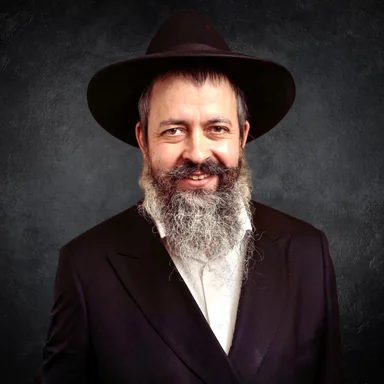
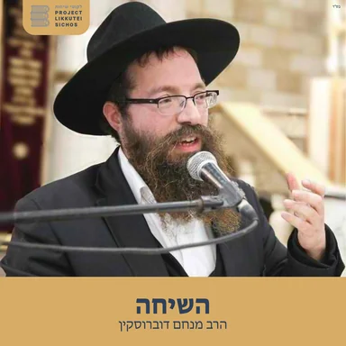

תורה־פּוֹד
פודקאסטים ושיעורי תורה להאזנה
בחרו פרק והתחילו להקשיב.
המשך האזנה
הפרקים החדשים
חיפוש


הצעות להתחלה
הצגת הכלעקבו אחרי פודקאסטים כדי לראות כאן את הפרקים החדשים שלהם.
פיד חיצוני
דבר מלכות • הרב גינזבורג
הרב חיים יוסף גינזבורג
127 פרקים
פרק אחרוןדבר מלכות פרשת לך לך | הרב חיים יוסף גינזבורג • תשפ״ז
פיד חיצוני
השיחה, הרב מנחם דוברוסקין
Project Likkutei Sichos
200 פרקים
פרק אחרוןחלק כה, וירא ג' = הרב מנחם דוברוסקין
פיד חיצוני
הרב יואל בייטש - הפודקאסט
הרב יואל בייטש
235 פרקים
פרק אחרוןהתגלית של אברהם ששינתה הכל • הרב יואל בייטש | מאמר ׳אנוכי מגן לך׳ תרצ״ט